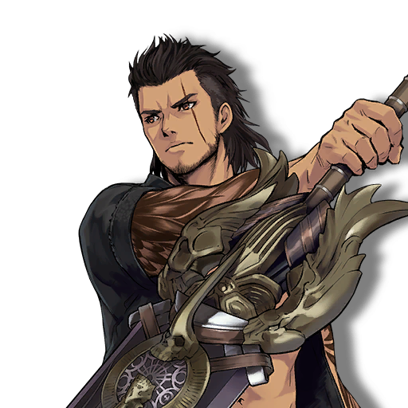
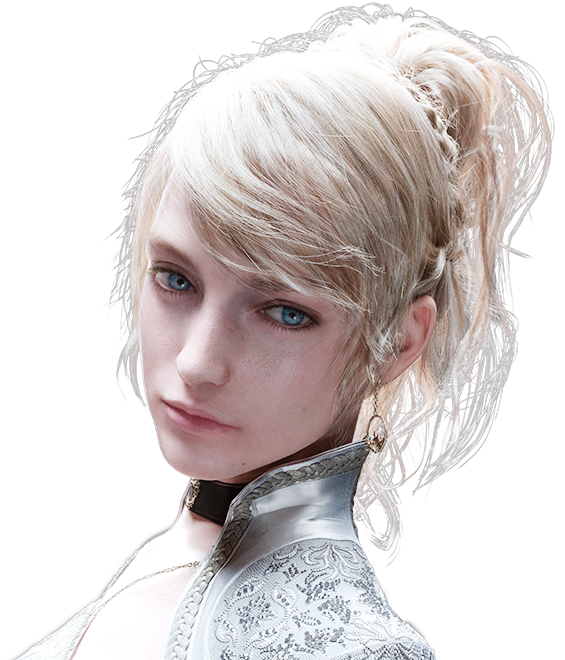
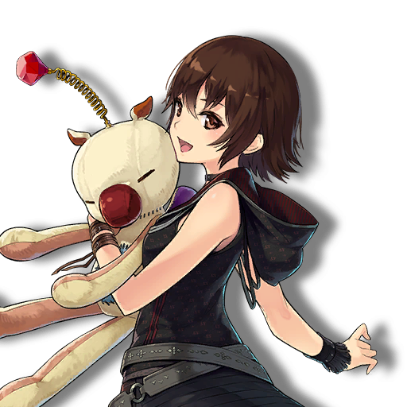
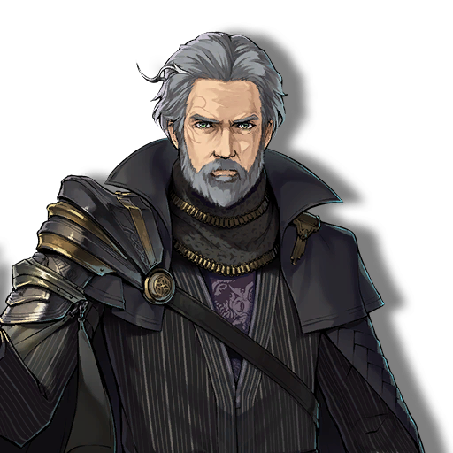
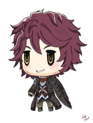

-
Zack Fair
 SOLDIER 1st Class1st Rose
SOLDIER 1st Class1st Rose -
Cloud Strife
 SOLDIER 1st Class2nd Rose
SOLDIER 1st Class2nd Rose -
Vincent Valentine
 Former Turks / Host of Chaos3rd Rose
Former Turks / Host of Chaos3rd Rose -
Noctis Lucis Caelum
 Prince of Lucis4th Rose
Prince of Lucis4th Rose -
Squall Leonhart
 The Lone Wolf5th Rose
The Lone Wolf5th Rose -
Tidus
 Blitzball Superstar6th Rose
Blitzball Superstar6th Rose -
Cid Highwind
 Airship Engineer7th Rose
Airship Engineer7th Rose -
Zidane Tribal
 The Wandering Thief8th Rose
The Wandering Thief8th Rose -
Zell Dincht
 The Cheerful Fighter9th Rose
The Cheerful Fighter9th Rose -
Hope Estheim
 The New Hope10th Rose
The New Hope10th Rose -
Balthier
 The Chill Gunslinger11th Rose
The Chill Gunslinger11th Rose -
Cecil Harvey
 Twin Soul of Light and Dark12th Rose
Twin Soul of Light and Dark12th Rose -
Ace
 Leader of Class 013th Rose
Leader of Class 013th Rose -
Noel Kreiss
 Guardian of Time14th Rose
Guardian of Time14th Rose -
Snow Villiers
 The Cold Hero15th Rose
The Cold Hero15th Rose -
Ignis ScientiaPrince's Advisor16th Rose
-
Gladioulus Amicitia
 The Shield of Lucis17th Rose -
Prompto Argentum
 Lucis' Photographer18th Rose
Lucis' Photographer18th Rose
-
Tifa Lockhart
 Fighter of Nibleheim1st Candle
Fighter of Nibleheim1st Candle -
Yuffie Kisaragi
 Ninja Princess of Wutai2nd Candle
Ninja Princess of Wutai2nd Candle -
Lunafreya Nox Fleuret
 Oracle of Tenebrae3rd Candle -
Iris Amicitia
 Gladio's Sister4th Candle -
Yuna
 Summoner of Spira5th Candle
Summoner of Spira5th Candle -
Claire "Lightning" Farron
 Knight of Etro6th Candle
Knight of Etro6th Candle -
Terra Branford
 High Destructo Mage7th Candle
High Destructo Mage7th Candle -
Rinoa Heartilly
 The Forest Owl8th Candle
The Forest Owl8th Candle -
Oerba dia Vanille
 L'Cie of Oerba9th Candle
L'Cie of Oerba9th Candle -
Serah Farron
 Oracle of Neul10th Candle
Oracle of Neul10th Candle -
Rikku
 A Thief Gone Good11th Candle
A Thief Gone Good11th Candle -
Rydia of Mist
 Summoner of Mist12th Candle
Summoner of Mist12th Candle -
Penelo
 Vaan's "Little" Sister13th Candle
Vaan's "Little" Sister13th Candle -
Y'shtola Rhul
 Guardian of the 14th Realm14th Candle
Guardian of the 14th Realm14th Candle -
Selphie Tilmitt
 Cheerful Whipper15th Candle
Cheerful Whipper15th Candle -
Rem Tokimiya
 Class 0 Cadet16th Candle
Class 0 Cadet16th Candle -
Ashelia B'nargin Dalmasca
 Princess of Dalmasca17th Candle
Princess of Dalmasca17th Candle -
Deuce
 Class 0 Number "2"18th Candle
Class 0 Number "2"18th Candle
-
Sephiroth
 One-Winged Angel1st Treasure
One-Winged Angel1st Treasure -
Genesis Rhapsodos
 LOVELESS Requiem2nd Treasure
LOVELESS Requiem2nd Treasure -
Angeal Hewley
 The Man who Protects his Honor3rd Treasure
The Man who Protects his Honor3rd Treasure -
Barret Wallace
 One-Man Army4th Treasure
One-Man Army4th Treasure -
Auron
 Guardian of Summoner5th Treasure
Guardian of Summoner5th Treasure -
Kuja
 The Silver Sorcerer6th Treasure
The Silver Sorcerer6th Treasure -
Seifer Almasy
 Mirrored Gunblade User7th Treasure
Mirrored Gunblade User7th Treasure -
Kefka Palazzo
 The Mad Clown Sorcerer8th Treasure
The Mad Clown Sorcerer8th Treasure -
Regis Lucis Caelum
 King of Lucis9th Treasure -
Ardyn Lucis Caelum
 The False Savior10th Treasure -
Kain Highwind
 Dragoon of the Red Baron11th Treasure
Dragoon of the Red Baron11th Treasure -
Gabranth
 Judge Executioner12th Treasure
Judge Executioner12th Treasure -
Golbez
 The Dark Sorcerer13th Treasure
The Dark Sorcerer13th Treasure -
Oerba Yun Fang
 Lancer of the Yun Clan14th Treasure
Lancer of the Yun Clan14th Treasure -
Jecht
 Former Guardian of Spira15th Treasure
Former Guardian of Spira15th Treasure -
Rosa Joanna Farrell
 The White Mage16th Treasure
The White Mage16th Treasure -
King
 Class 0 "King"17th Treasure
Class 0 "King"17th Treasure -
Ultimicia
 Dark Sorceress18th Treasure
Dark Sorceress18th Treasure